Show code
d_coh <- simulate_cohort(n = N_COHORT, seed = 2024)
c(rows = nrow(d_coh), distinct_ids = dplyr::n_distinct(d_coh$id)) rows distinct_ids
50000 50000 The following should be taken as recommendations, at your own responsibility. Statistics is complicated and most often there is no single best way of doing it. Neither is there a single correct answer.
The goal is to check for general features of data (range, variation, distribution), as well as surprising and alarming features, like impossible values and other outliers. But also check possible co-dependencies in data by looking at co-variation between 2 or more variables. So EDA checks the data quality (and by this, the quality of the experiment and/or data collection), but it also tries to form a first impression about anything scientifically interesting in the data. EDA also gives hints about possible routes for data pre-processing for formal modelling.
Always start your analysis by plotting out the data, and simple dependencies. Never start by formal modelling of the data.
What separates exploration from confirmation is not the complexity of the tool but the status of the claim. A confirmatory analysis estimates a quantity that was specified before the data were seen; an exploratory analysis looks for structure, and the questions it ends up asking are chosen because of what the data turned out to look like. The same regression can serve either role. This distinction governs two things that recur throughout this appendix: which models belong in EDA (any of them, provided they are read as descriptions – see Section A.8), and what the intervals attached to them mean once the data have already been inspected (Section A.9).
The first questions are not about distributions. They are about whether the table in front of you is the table you think it is. These checks are tedious and they are where most of the errors are.
Before anything else, state what a single row represents: one patient, one visit, one patient-year, one aliquot, one plate well. A great many silent analysis errors are a mismatch between the unit of the table and the unit of the model – fitting a patient-level model to a table that carries one row per visit weights patients by how often they attended, which is rarely what anyone intends.1 The check is arithmetic: the number of rows should equal the number of distinct identifiers, and if it does not, you have either a longitudinal table or a botched join.
d_coh <- simulate_cohort(n = N_COHORT, seed = 2024)
c(rows = nrow(d_coh), distinct_ids = dplyr::n_distinct(d_coh$id)) rows distinct_ids
50000 50000 Duplicated rows introduced by a many-to-many join are the single most common data-processing bug, and they are invisible in every plot in this appendix: duplication does not change a histogram’s shape, only its height.
The second pass is a table with one row per variable, giving its type, how much is missing, how many distinct values it takes, and its range. Here it is applied to a deliberately damaged copy of the cohort:
screen <- function(df) {
tibble(variable = names(df),
class = vapply(df, \(v) class(v)[1], ""),
n_missing = vapply(df, \(v) sum(is.na(v)), 0L),
n_unique = vapply(df, \(v) length(unique(v)), 0L),
min = vapply(df, \(v) if (is.numeric(v)) min(v, na.rm = TRUE) else NA_real_, 0),
max = vapply(df, \(v) if (is.numeric(v)) max(v, na.rm = TRUE) else NA_real_, 0))
}
set.seed(5)
dirty <- d_coh
dirty$age <- round(dirty$age)
heaped <- sample(nrow(dirty), 0.45 * nrow(dirty))
dirty$age[heaped] <- round(dirty$age[heaped] / 5) * 5 # rounding to multiples of 5
dirty <- rbind(dirty, dirty[c(1, 2), ]) # a botched join
dirty$age[c(3, 77, 501)] <- 999 # a sentinel code
dirty$sbp[12] <- -142 # a sign slip
dirty$sbp[40] <- 1380 # a decimal slip
screen(dirty) |> kbl(booktabs = TRUE, digits = 2) |> kable_styling(full_width = FALSE)| variable | class | n_missing | n_unique | min | max |
|---|---|---|---|---|---|
| id | integer | 0 | 50000 | 1.00 | 50000.00 |
| age | numeric | 0 | 52 | 40.00 | 999.00 |
| diabetes | integer | 0 | 2 | 0.00 | 1.00 |
| pref | integer | 0 | 2 | 0.00 | 1.00 |
| severity | numeric | 0 | 50000 | -4.99 | 4.77 |
| severity_mar | numeric | 12691 | 37312 | -4.99 | 4.66 |
| severity_mnar | numeric | 13492 | 36510 | -4.99 | 4.51 |
| drug | integer | 0 | 2 | 0.00 | 1.00 |
| sbp | numeric | 0 | 50000 | -142.00 | 1380.00 |
| stroke | integer | 0 | 2 | 0.00 | 1.00 |
| hospitalised | integer | 0 | 2 | 0.00 | 1.00 |
Four different faults are visible in that table:
age has a maximum of 999. Sentinel codes for “missing” or “not asked” – 999, -9, -99, 9999, 1900-01-01 – are the reason a variable must never be summarised before its range is inspected. Left in place, a handful of them will move a mean by a large amount and will not register as missing anywhere.sbp runs from -142 to 1380: a sign slip and a decimal slip. Both are legal numbers and illegal blood pressures. The screen catches them only because you know the legal range; a variable’s plausible bounds are subject knowledge, not statistics.age has 52 distinct values in 50002 rows. A “continuous” variable with few distinct values is either genuinely discrete, rounded, or coded; the count tells you which before you model it as continuous. The same column also flags the opposite fault – a categorical variable with thousands of levels is free text, not a factor.Values do not arrive on a continuum just because the underlying quantity is continuous. Self-reported ages heap on multiples of five, birth weights on multiples of 100 g, blood pressures on even numbers and multiples of ten. The diagnostic is the distribution of the final digit, which should be flat and rarely is (Figure A.1):
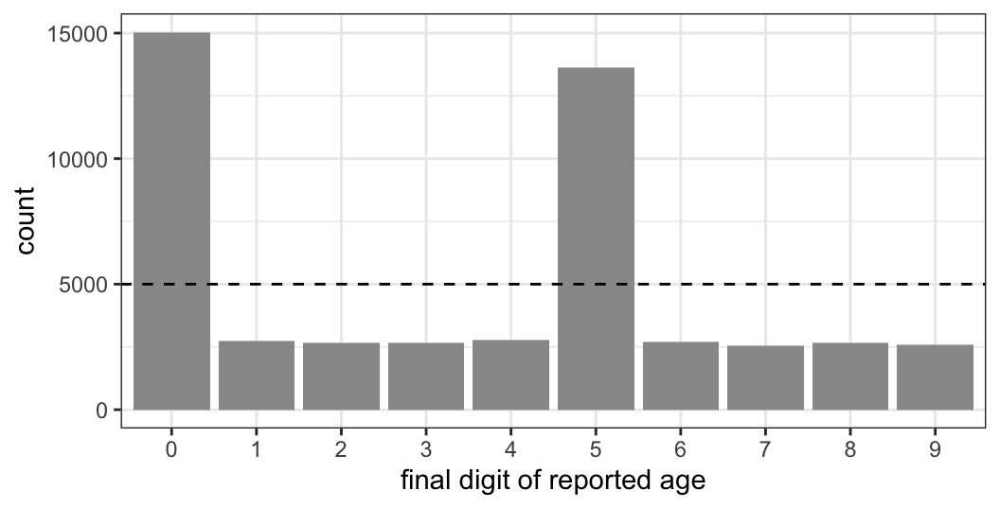
Heaping matters because it puts a floor on the resolution of any analysis using that variable, and because it is often differential: the people who round are not a random subset. The related faults to look for are floor and ceiling effects (a score that many people achieve the maximum of carries no information about who among them is highest) and limits of detection. An assay reported as “below the limit of detection” and recorded as 0, or as LOD/2, produces a spike of identical values at the bottom of the distribution. That spike is left-censoring, not data, and substituting a constant for it biases both the mean and the variance. Because assay values are usually log-normal (Section A.7.1), the spike is also the part of the distribution where a log transform does the most damage.
Missingness is a property of the data worth describing in its own right, and it should be described before you decide what to do about it (Chapter 30). Three things are worth extracting.
How much, and where. The master cohort carries two damaged copies of the confounder severity, one missing at random on age and one missing on its own value:
d_coh |>
summarise(across(everything(), \(v) mean(is.na(v)))) |>
pivot_longer(everything(), names_to = "variable", values_to = "prop_missing") |>
filter(prop_missing > 0) |>
kbl(booktabs = TRUE, digits = 3) |> kable_styling(full_width = FALSE)| variable | prop_missing |
|---|---|
| severity_mar | 0.254 |
| severity_mnar | 0.270 |
About 25% of a key confounder is missing in one copy and 27% in the other. That figure alone determines whether a complete-case analysis is viable, and with several such variables the intersection shrinks fast: it is worth computing the proportion of rows complete on all the variables the intended model needs, which is usually much smaller than any single column suggests.
What predicts being missing. Compare the distribution of every other variable between the rows where the variable is present and where it is absent. This is the exploratory step that an imputation model depends on, because an imputation model is only as good as the observed predictors of missingness that it is given.
bind_rows(
d_coh |> transmute(mechanism = "MAR (missing on age)",
missing = is.na(severity_mar), age, true_severity = severity),
d_coh |> transmute(mechanism = "MNAR (missing on severity)",
missing = is.na(severity_mnar), age, true_severity = severity)) |>
group_by(mechanism, missing) |>
summarise(n = n(), mean_age = mean(age),
mean_true_severity = mean(true_severity), .groups = "drop") |>
kbl(booktabs = TRUE, digits = 2) |> kable_styling(full_width = FALSE)| mechanism | missing | n | mean_age | mean_true_severity |
|---|---|---|---|---|
| MAR (missing on age) | FALSE | 37311 | 60.42 | 0.05 |
| MAR (missing on age) | TRUE | 12689 | 67.00 | 0.34 |
| MNAR (missing on severity) | FALSE | 36509 | 61.18 | -0.10 |
| MNAR (missing on severity) | TRUE | 13491 | 64.56 | 0.72 |
In both cases the rows with missing data are older, and in both cases they have higher true severity. From the observed data the two mechanisms look alike.
What EDA cannot tell you. The distinction between them is that under MAR the association with severity runs entirely through age, so it should vanish once age is held fixed, while under MNAR it should not:
bind_rows(
d_coh |> transmute(mechanism = "MAR (missing on age)",
missing = is.na(severity_mar), age, true_severity = severity),
d_coh |> transmute(mechanism = "MNAR (missing on severity)",
missing = is.na(severity_mnar), age, true_severity = severity)) |>
mutate(age_band = cut(age, quantile(age, 0:3/3), include.lowest = TRUE,
labels = c("young", "middle", "old"))) |>
group_by(mechanism, age_band, missing) |>
summarise(mean_true_severity = mean(true_severity), .groups = "drop") |>
pivot_wider(names_from = missing, values_from = mean_true_severity,
names_prefix = "missing_") |>
mutate(difference = missing_TRUE - missing_FALSE) |>
kbl(booktabs = TRUE, digits = 3) |> kable_styling(full_width = FALSE)| mechanism | age_band | missing_FALSE | missing_TRUE | difference |
|---|---|---|---|---|
| MAR (missing on age) | young | -0.395 | -0.358 | 0.037 |
| MAR (missing on age) | middle | 0.103 | 0.127 | 0.023 |
| MAR (missing on age) | old | 0.625 | 0.700 | 0.075 |
| MNAR (missing on severity) | young | -0.532 | 0.168 | 0.700 |
| MNAR (missing on severity) | middle | -0.076 | 0.620 | 0.696 |
| MNAR (missing on severity) | old | 0.412 | 1.120 | 0.708 |
Within age bands the MAR difference is negligible and the MNAR difference is large – but obtaining that table required severity, the fully observed version of the variable that is, by construction, the thing we do not have. In real data the column that would settle the question is precisely the missing one. MAR and MNAR are not distinguishable from the observed data, and no diagnostic will make them so; the choice between them is an assumption argued from subject knowledge about why the values are absent.2 What EDA delivers is the quantity missing, the observed predictors of missingness that an imputation model should include, and an early warning when a complete-case analysis would discard most of the study. The naniar and visdat packages provide the standard displays – missingness by variable, co-occurrence of missingness across variables, and the shadow matrix that pairs each variable with its own missingness indicator.3
Choose the display by how much of the data it discards and by how many groups it has to hold. Table A.1 orders the common choices by information loss, and Figure A.2 shows four of them on the cohort’s blood pressure. Two habits belong with every choice: try more than one bin width before trusting a histogram, since its shape depends on an arbitrary setting; and show the individual points whenever the sample is small enough for them to be seen, because every summary below them discards something.
| Display | What it shows | Information lost | Use when |
|---|---|---|---|
| Strip chart, with a median or mean mark | every value | none | both the sample size \(n\) and the number of groups \(k\) are small (under 10 or so); the default for small experiments |
| Histogram | counts in bins | position within a bin; the shape depends on the bin width | \(n\) at least moderate (30 or more); superimpose for 2–4 groups |
| Density plot | a smoothed histogram with area one | fine structure; depends on the bandwidth | as the histogram, for several groups superimposed |
| Violin plot | a mirrored density per group | as the density | \(n\) moderate, \(k\) moderate (10–30) |
| Box plot | median, quartiles, whiskers to 1.5 × IQR, points beyond them | everything but five numbers and the outliers | \(k\) large (20–50); many variables side by side |
| Ridge plot | stacked densities per group, optionally with the points as ticks | as the density | \(k\) large (30 or more) |
| Scatter plot with a smoother | the joint distribution of two variables; a loess or spline shows its shape | nothing of the two variables | any two continuous variables; a third by colour or facet |
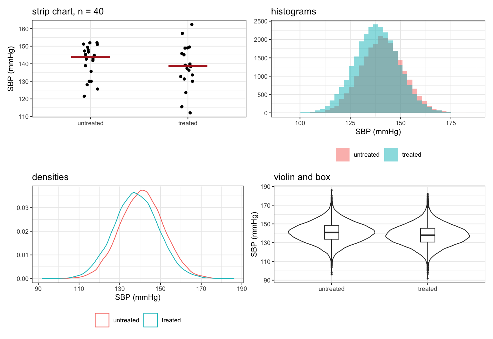
Add a third variable to a scatter plot by colour or by facetting, not by point size or opacity: human perception judges position against a common axis accurately and judges area, angle and colour saturation poorly, so a fourth or fifth encoded variable is usually decoration rather than information. The same limit rules out comparing quantities by circle area or pie-slice angle in any display.
Two continuous variables are examined with a scatter plot and a smoother, stratified by colour or by facet when a third variable matters. Beyond the picture, the temptation is to compress the relationship into one number, and the rest of this section is about what that number hides.
The correlation coefficient is the most compressed summary of co-variation there is, and the compression discards precisely the things EDA exists to find.
A correlation does not determine the picture. Anscombe constructed four data sets with the same means, variances, correlation and regression line, and four completely different scatter plots.4 The construction has since been automated: the datasauRus package holds a dozen data sets agreeing on all of those statistics to two decimal places, one of which is a dinosaur (Figure A.3).5
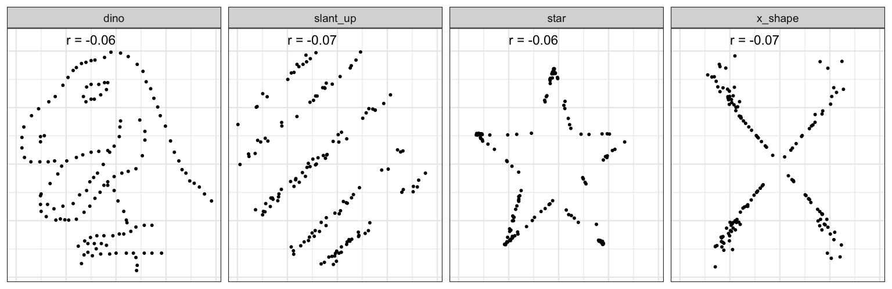
A correlation computed on groups is not the correlation on individuals. Aggregating removes within-group variation, and what remains is the between-group relationship, which can be far stronger than – or opposite in sign to – the individual one. This is the ecological fallacy.6 Aggregating the cohort into age bands drives a moderate individual correlation almost to one:
eco <- map_dfr(c(5, 10, 20, 50, 200), \(k)
d_coh |>
mutate(bin = ntile(age, k)) |>
group_by(bin) |>
summarise(sev = mean(severity), sbp = mean(sbp), .groups = "drop") |>
summarise(groups = k, r = cor(sev, sbp)))
bind_rows(tibble(groups = nrow(d_coh), r = cor(d_coh$severity, d_coh$sbp)), eco) |>
arrange(desc(groups)) |>
mutate(level = if_else(groups == nrow(d_coh), "individuals", "group means")) |>
kbl(booktabs = TRUE, digits = 3) |> kable_styling(full_width = FALSE)| groups | r | level |
|---|---|---|
| 50000 | 0.488 | individuals |
| 200 | 0.982 | group means |
| 50 | 0.996 | group means |
| 20 | 0.998 | group means |
| 10 | 0.999 | group means |
| 5 | 0.999 | group means |
Nothing about the data changed; only the unit of analysis did. The practical rule is that a correlation is a statement about the unit it was computed on, and correlations computed on country-level, clinic-level or year-level averages say nothing directly about individuals.
A correlation within strata can reverse the correlation overall. This is Simpson’s paradox,7 and in observational epidemiology it is not a curiosity but the normal state of affairs: it is what confounding looks like in a table. The master cohort is built so that the crude association of the drug with stroke has the wrong sign:
bind_rows(
d_coh |> summarise(stratum = "crude (all patients)",
n = n(),
risk_untreated = mean(stroke[drug == 0]),
risk_treated = mean(stroke[drug == 1])),
d_coh |>
mutate(q = cut(severity, quantile(severity, 0:4/4), include.lowest = TRUE,
labels = paste("severity quartile", 1:4))) |>
group_by(stratum = as.character(q)) |>
summarise(n = n(),
risk_untreated = mean(stroke[drug == 0]),
risk_treated = mean(stroke[drug == 1]), .groups = "drop")) |>
mutate(risk_difference = risk_treated - risk_untreated) |>
kbl(booktabs = TRUE, digits = 4) |> kable_styling(full_width = FALSE)| stratum | n | risk_untreated | risk_treated | risk_difference |
|---|---|---|---|---|
| crude (all patients) | 50000 | 0.0348 | 0.0582 | 0.0234 |
| severity quartile 1 | 12500 | 0.0142 | 0.0131 | -0.0010 |
| severity quartile 2 | 12500 | 0.0321 | 0.0227 | -0.0094 |
| severity quartile 3 | 12500 | 0.0603 | 0.0362 | -0.0241 |
| severity quartile 4 | 12500 | 0.1196 | 0.1023 | -0.0173 |
Crudely the drug looks harmful; within every severity quartile it looks protective. Which of the two answers the causal question is not a statistical matter and cannot be settled by looking harder at the table – it is settled by the DAG (Chapter 12); Chapter 13 shows the arithmetic of the reversal. The exploratory lesson is narrower and still worth having: never report a two-variable summary without conditioning on the variables you already know matter, because the unconditional version can carry the opposite sign.
To look at more than about four dimensions at once, you need to project them onto fewer. Principal component analysis (PCA) rotates the variables onto orthogonal axes ordered by variance explained; t-SNE and UMAP are non-linear embeddings that try to keep near neighbours near. All of them are useful, and all are easy to over-read.
PCA depends on scaling, and the components are not findings. The components are chosen to capture variance, so a variable measured in small units contributes little and one measured in large units dominates. Four cohort variables measured in different units – age in years, blood pressure in mmHg, severity in standard-deviation units, diabetes as 0/1 – give a first component that explains a different share of the variance depending on whether they were standardised:
pc_vars <- d_coh[, c("age", "sbp", "severity", "diabetes")]
c(unscaled = summary(prcomp(pc_vars))$importance[2, 1],
scaled = summary(prcomp(pc_vars, scale. = TRUE))$importance[2, 1]) |> round(3)unscaled scaled
0.659 0.487 Neither answer is wrong; they answer different questions, and the choice has to be made deliberately rather than left to the function’s default. A component is a weighted sum of the original variables. It acquires a name (“a general severity axis”) only by interpretation, and that interpretation is a hypothesis.
Neighbour embeddings manufacture clusters. t-SNE and UMAP optimise a local criterion, so in the output the sizes of clusters, the distances between them, and the empty space separating them are all largely meaningless, and the hyperparameters drive the picture.8 Most importantly, an embedding of data with no structure at all does not look empty (Figure A.4):
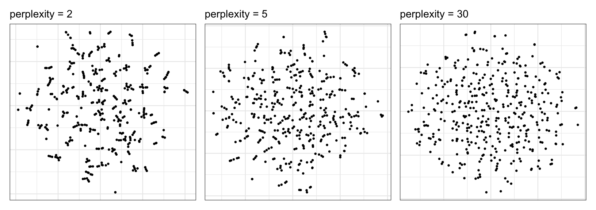
The working rules: standardise deliberately and say that you did; report the hyperparameters, because the picture is not reproducible without them; run the embedding on permuted or simulated null data to see what “no structure” looks like for your sample size before believing the clusters in the real one; and never take a cluster from an embedding as established without checking it against something the embedding did not use.
Plot every important variable against the order in which it was measured, and against every technical grouping you have: date, run order, plate, batch, reagent lot, instrument, operator, centre. This is the highest-yield plot in laboratory and register data and the one most often skipped, because the variables it uses are administrative and feel like they are not part of the analysis.
The reason it is high-yield is that a technical effect is invisible in every display that ignores the technical variable. Here is a set of 144 assay results across six plates, run in plate order, with a modest plate offset and a slow within-run drift (Figure A.5):
set.seed(21)
plate_offset <- rnorm(6, 0, 0.15)
assay <- expand_grid(plate = factor(1:6), well = 1:24) |>
mutate(run_order = row_number(),
value = exp(1.6 + plate_offset[as.integer(plate)] +
0.004 * run_order + rnorm(n(), 0, 0.20)))
p_marginal <- ggplot(assay, aes(value)) +
geom_histogram(bins = 22, fill = "grey65") +
labs(x = "assay value", y = NULL, title = "distribution only") + theme_bw()
p_order <- ggplot(assay, aes(run_order, value, colour = plate)) +
geom_point(size = 1.1) +
geom_smooth(method = "loess", se = FALSE, colour = "black", linewidth = 0.5) +
labs(x = "run order", y = "assay value", title = "against run order") + theme_bw()
p_marginal + p_order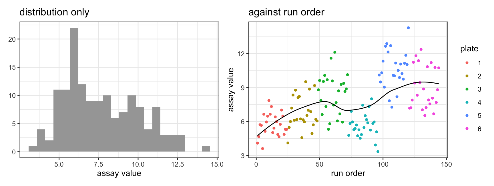
Nothing in the left panel is wrong; it is simply blind to the fault. The right panel shows two distinct problems: the plates are offset from each other, and values increase steadily through the run.
The consequences depend on how the technical variable relates to the scientific one. If samples were allocated to plates at random, a batch effect adds noise and costs precision. If they were not – if cases were run on one set of plates and controls on another, or if recruitment happened to put the early patients in the early runs – then the technical variable is a confounder of the exposure-outcome relationship and the effect it produces is indistinguishable from the effect you are looking for.9 That question is answered by cross-tabulating the technical variable against the scientific one, which should be part of the same pass:
table(plate = assay$plate, half_of_run = ifelse(assay$run_order <= 72, "first", "second")) half_of_run
plate first second
1 24 0
2 24 0
3 24 0
4 0 24
5 0 24
6 0 24A table like this with empty cells is the warning: the design has confounded batch with something, and no analysis of these data can undo it. That is worth knowing at the exploratory stage, when the remaining samples can still be randomised across the remaining plates.
The same plot serves for register and cohort data, where the ordering variables are calendar time and time since study start. Look for discontinuities at the dates when a coding system, a guideline or a laboratory method changed; for drifts in the case mix as recruitment proceeded; and for the artificial pile-up of events at the start or end of follow-up that indicates a date-handling error. Where a variance components model is available, the technical groupings can be entered as crossed random effects and read off as variance components (Section A.8.1), which turns “is there a plate effect” into “how large is it relative to the biology”.
An exploratory plot is for finding the story; a publication figure presents a story already decided on, and every choice in it – axis ranges, aspect ratio, the geometry used to encode a quantity – moves the reader’s perception one way or the other. Table A.2 collects the rules most often broken.
| Rule | Reason |
|---|---|
| No pie charts; show proportions as bars on a 0–1 axis | angles and areas are judged poorly, lengths against a common baseline well |
| For continuous outcomes prefer dots or line segments at the means to bars, and show the individual points | a bar implies a quantity that starts at zero and hides the data behind it |
| Join points with lines only when the x-axis is continuous and intermediate values are meaningful | a line asserts interpolation |
| Avoid two y-axes unless they are transformations of each other (Celsius and Fahrenheit) | two free scales can make any two series look related |
| Choose axis ranges and the aspect ratio deliberately, and say so | both change the perceived size of an effect and the perceived slope |
| Do not draw a straight line through a curved association; use a smoother | the line asserts a form the data do not have |
| Maximise the share of ink that carries data; prefer black and white to greyscale, and greyscale to colour, when the message survives it | every non-data element competes for the reader’s attention |
A figure may still be complicated and slow to read when nothing simpler carries the message; the rules bear on the elements that carry none.
If you are graphing individual datapoints, then summarising the data by the median (which is also graphed) is the safest bet, because the mean (arithmetic mean) becomes hard to interpret for non-symmetrical data distributions. The median always has the same interpretation as the data point, from which half the data is larger and half is smaller.
The most likely datapoint is not the median, but the mode. The mode is often harder to estimate with any precision than the median or the mean. The mean is more efficient than the mode or the median, in the sense that one can build narrower confidence intervals around the mean than the median. But this does not change the fact that median often makes more intuitive sense. In fact it is hard to imagine a situation in biology (although not in economy) where the mean makes better conceptual sense than the median.
For description of central tendency use mean for symmetrical distributions, but the median for most datasets you come across.
For the spread of the data the usual summary is the standard deviation (SD), which for a normal distribution covers about 68% of the values within one SD of the mean and 95% within two; for other shapes those numbers do not hold, and for log-normal data the multiplicative SD of Section A.7.1 is the right analogue. The SD describes the data. Its relative, the standard error of the mean, \(\text{SEM} = \text{SD}/\sqrt{n}\), describes the uncertainty of an estimate and belongs to inference, not description: Appendix G sets out the sampling distribution it summarises, and Chapter 10 the posterior that takes its place in this book. Neither the SEM nor an interval built from it belongs on an exploratory figure of data points; the section on intervals below says why.
An alternative to the SD is the MAD, the median absolute deviation. If the SD is calculated as
\[SD = \sqrt{\frac{\sum(x_i - \bar x)^2}{n-1}}\]
then the MAD is the median of the absolute distances from the median,
\[MAD = \mathrm{median}\left(\vert x_i - \mathrm{median}(x) \vert\right)\]
which is what R’s mad() computes. (R also rescales it by 1.4826 by default, so that for normal data the MAD is on the same scale as the SD; set constant = 1 to switch that off.) The closely related mean absolute deviation, \(\sum \vert x_i - \bar x \vert / n\), is a different quantity: it uses the mean rather than the median twice over, and is correspondingly less resistant to outliers. The MAD is both more intuitive and much less sensitive to outliers than the SD (note the lack of the squaring operator). However, it does not have the neat mathematical properties of the SD (the SEM and the intervals built on it, Appendix G).
As a convention, mean and SD should be used together, as median and MAD should be used together.
Another useful summary of data variation is the interquartile range (IQR), the distance from the 25th to the 75th percentile, which covers the middle half of the data (this is exactly what the box in a boxplot does). It is usually reported as part of the five-number summary: the minimum value – 25th percentile – median – 75th percentile – maximum value.
Beware of summarising data via min and max, as these depend on sample size. The more data you have, the further min and max tend to creep from the median. For the same reason, beware of estimating population distribution from the shape of the data distribution, as even highly non-symmetric distributions can appear near-normal with moderate sample sizes. Statistical normality tests should therefore be avoided (especially as with large n-s they always provide small p values, suggesting non-normality even with approximately normal data).
A great deal of biological data is log-normal (Chapter 7): concentrations, titres, incubation periods, enzyme activities, cell counts, expression ratios. These are quantities generated by multiplying factors rather than adding them, and the summaries appropriate to them are multiplicative too. Reporting a log-normal variable as “mean (SD)” produces two numbers that describe no part of the data: the mean is larger than the typical value, and mean minus 2 SD is often negative for a quantity that cannot be negative.
If \(\log x\) is normal with mean \(\mu\) and SD \(\sigma\), then the natural descriptive pair is:
Because \(s^*\) is a factor, it does not add to and subtract from the centre; it multiplies and divides it. Limpert, Stahel and Abbt write this with a \(\times/\div\) sign, \(\bar x^* \times/\div\, s^*\), by exact analogy with \(\bar x \pm s\).10 The intervals are
\[\left[\;\bar x^* / s^*,\;\; \bar x^* \cdot s^*\;\right] \approx 68\% \qquad \left[\;\bar x^* / (s^*)^2,\;\; \bar x^* \cdot (s^*)^2\;\right] \approx 95\%\]
and, unlike \(\bar x \pm 2s\), they cannot run below zero. Everything is computed on the log scale and transformed back at the end:
set.seed(11)
x <- rlnorm(200, meanlog = log(35), sdlog = log(1.9)) # GM 35, GSD 1.9
gm <- exp(mean(log(x))) # geometric mean
gsd <- exp(sd(log(x))) # multiplicative (geometric) SD
tibble(
statistic = c("geometric mean", "multiplicative SD (a factor)",
"68% band", "95% band",
"arithmetic mean", "arithmetic SD"),
value = c(sprintf("%.1f", gm), sprintf("%.2f", gsd),
sprintf("%.1f to %.1f", gm/gsd, gm*gsd),
sprintf("%.1f to %.1f", gm/gsd^2, gm*gsd^2),
sprintf("%.1f", mean(x)), sprintf("%.1f", sd(x))),
covers = c("", "",
sprintf("%.0f%% of the data", 100*mean(x > gm/gsd & x < gm*gsd)),
sprintf("%.0f%% of the data", 100*mean(x > gm/gsd^2 & x < gm*gsd^2)),
"", "")
) |> kbl(booktabs = TRUE) |> kable_styling(full_width = FALSE)| statistic | value | covers |
|---|---|---|
| geometric mean | 35.0 | |
| multiplicative SD (a factor) | 1.84 | |
| 68% band | 19.0 to 64.5 | 70% of the data |
| 95% band | 10.3 to 119.1 | 94% of the data |
| arithmetic mean | 42.4 | |
| arithmetic SD | 30.0 |
The multiplicative bands cover what they claim to cover. The arithmetic pair does not: the mean of 42.4 minus twice the SD of 30.0 gives -17.6, a negative concentration, and the arithmetic mean itself is nowhere near the middle of the data.
Three consequences worth keeping straight:
Back-transforming a mean of logs gives a median, not a mean. The arithmetic mean of a log-normal variable is \(\exp(\mu + \sigma^2/2) = \bar x^* \cdot e^{\sigma^2/2}\), which always exceeds the geometric mean; here that is 42.2 against a geometric mean of 35.0. Which of the two you want depends on the question, and the answer is not always the geometric mean. If you need a typical individual value, use the geometric mean. If you need a quantity that must multiply up to a correct total – total cost across a population, total exposure, total biomass – you need the arithmetic mean, because only the arithmetic mean satisfies \(n \bar x = \sum x_i\).11
The uncertainty in the geometric mean is multiplicative too. The standard error on the log scale is \(\sigma/\sqrt n\), so the multiplicative standard error is \(\exp(\sigma/\sqrt n)\), equivalently \((s^*)^{1/\sqrt n}\), and the confidence interval for the geometric mean is obtained by exponentiating the interval computed on the log scale:
n <- length(x)
se <- sd(log(x)) / sqrt(n)
c(gm_lower = exp(mean(log(x)) - 1.96 * se),
gm = gm,
gm_upper = exp(mean(log(x)) + 1.96 * se)) |> round(2)gm_lower gm gm_upper
32.14 34.99 38.09 Note that this interval is *not* symmetric around the geometric mean
in the original units, and should not be reported as "GM ± something".The diagnostic for all of this is simple and belongs in your first pass over the data: plot a histogram of \(x\) and a histogram of \(\log x\) (Figure A.6), or a normal QQ-plot of each. If the raw variable is right-skewed and the log is symmetric, use the multiplicative summaries. Do not use a normality test to decide (see the warning at the end of the previous section).
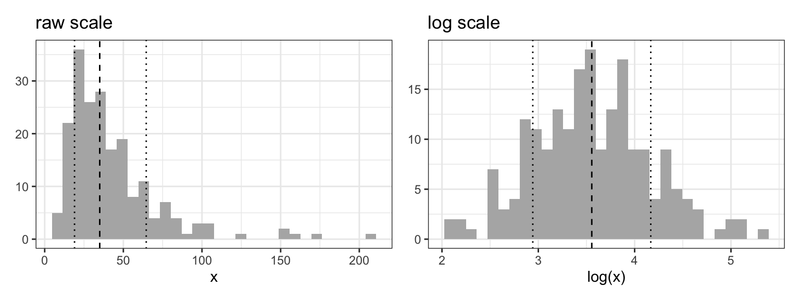
Means and SDs are summaries for continuous data. Counts and event times have their own descriptive questions, and skipping them tends to produce a model with the wrong likelihood.
Counts: is the variance the mean? A Poisson variable has variance equal to its mean, and that is the assumption a Poisson model makes. The diagnostic is to bin the observations on an observed covariate and plot each bin’s variance against its mean; under Poisson the points follow the identity line (Figure A.7).
set.seed(31)
np <- 4000
xcov <- rnorm(np)
visits <- rpois(np, exp(0.4 + 0.6 * xcov)) * rbinom(np, 1, 0.75) # with extra zeros
tibble(v = visits, bin = ntile(xcov, 20)) |>
group_by(bin) |>
summarise(m = mean(v), variance = var(v), .groups = "drop") |>
ggplot(aes(m, variance)) +
geom_abline(slope = 1, intercept = 0, linetype = 2) +
geom_point(size = 1.4) +
labs(x = "bin mean", y = "bin variance") + theme_bw()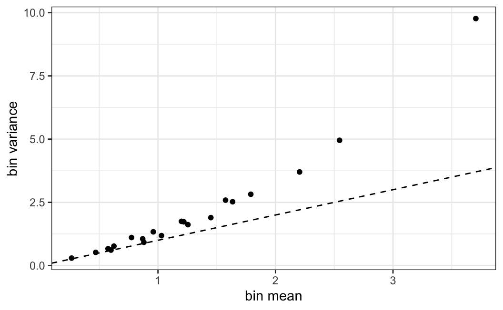
Counts: are there too many zeros? Compare the observed proportion of zeros with the proportion a Poisson with the same fitted mean would produce:
lambda_hat <- fitted(glm(visits ~ xcov, family = poisson))
c(mean = mean(visits), variance = var(visits),
zeros_observed = mean(visits == 0),
zeros_poisson = mean(dpois(0, lambda_hat))) |> round(3) mean variance zeros_observed zeros_poisson
1.282 2.715 0.443 0.348 Overdispersion and excess zeros are different faults with different remedies – a negative binomial absorbs the first, a hurdle or zero-inflated model the second – and they often occur together, as here. The corresponding graphical check for a fitted count model is the rootogram, which plots observed and expected frequencies on a square-root scale so that the small frequencies in the tail remain visible.12
Time to event: describe the follow-up, not just the events. With censoring, neither the number of events nor the mean observed time is interpretable on its own; the descriptive summary is the Kaplan-Meier curve (Figure A.8). The less familiar companion is the reverse Kaplan-Meier, which swaps the roles of event and censoring and so describes how long people were actually observed for.13 Its median is the right answer to “what was the median follow-up”, a quantity routinely misreported as the median of the observed times, which is biased downwards by the events.
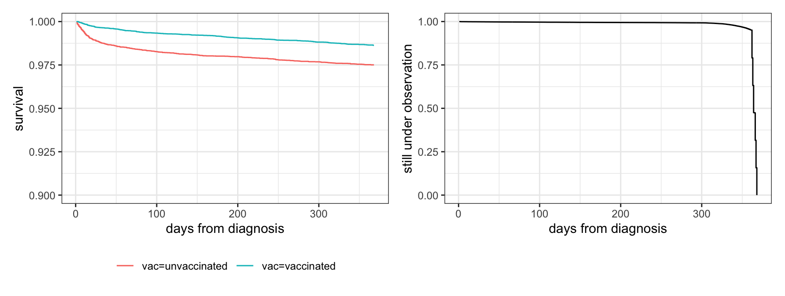
c(events = sum(d_surv$status),
event_fraction = mean(d_surv$status),
median_observed_time = median(d_surv$time),
median_followup_reverse_km = summary(rev_fit)$table[["median"]]) |> round(3) events event_fraction
627.000 0.019
median_observed_time median_followup_reverse_km
364.000 364.000 Here the two agree, because deaths are rare: with under 2% of the cohort having an event, almost everybody’s observed time is their follow-up time. The distinction becomes large as soon as events are common, since each event truncates that person’s observation and drags the median of the observed times downwards:
set.seed(8)
n_sim <- 2000
t_event <- rexp(n_sim, rate = 1/250) # event times
t_cens <- runif(n_sim, 0, 700) # when observation would have stopped
t_obs <- pmin(t_event, t_cens)
had_event <- as.integer(t_event <= t_cens)
c(event_percent = 100 * mean(had_event),
median_observed_time = median(t_obs),
median_followup_reverse_km = summary(survfit(Surv(t_obs, 1 - had_event) ~ 1))$table[["median"]],
truth_median_potential_followup = median(t_cens)) |> round(1) event_percent median_observed_time
65.4 119.4
median_followup_reverse_km truth_median_potential_followup
355.5 347.6 The median of the observed times understates the follow-up by a factor of three; the reverse Kaplan-Meier recovers it. Alongside it, tabulate the number at risk at a few landmark times: a survival curve’s right-hand tail is often estimated from a handful of people, and the curve gives no visual indication of that.
The rule “never start by formal modelling” is about the status you grant a model, not about which mathematics you are allowed to use. A model fitted in the exploratory phase is a data summary: it compresses the data into a few numbers and a picture, and it earns its place if the compression is faithful and the picture is informative. A model fitted in the confirmatory phase estimates a pre-specified quantity, and its intervals are meant to be taken at face value. The same brm() call can do either job. What changes is whether the specification was chosen before or after you looked.
Read this way, the smoother you already put on every scatter plot is the first member of a family of exploratory models. geom_smooth() fits a loess or a spline and draws it; nobody interprets its coefficients, and that is the point – it is there to show the shape of a dependency without committing to a functional form. A linear regression used the same way, to ask “roughly how steep is this and is it monotone”, is EDA. The same regression used to report an adjusted causal effect is not.
Two further members of the family deserve explicit treatment, because they answer descriptive questions that no plot answers on its own: multilevel models, when the data have a grouping structure, and latent class analysis, when a block of categorical variables needs to be reduced to a few profiles.
Whenever observations come in groups – patients in clinics, mice in cages, samples in batches, measurements on plates, repeated readings on the same subject – three descriptive questions arise before any causal question does:
A variance-components model answers all three, and it answers the first two better than the arithmetic that people usually reach for. The clustered cohort of Chapter 28 has 80 clinics of very unequal size:
dc <- simulate_clinics()
m_eda <- brm(sbp ~ 1 + (1 | clinic), data = dc,
prior = c(prior(normal(140, 20), class = Intercept),
prior(exponential(0.1), class = sd),
prior(exponential(0.1), class = sigma)),
chains = 2, iter = 2000, cores = 2, seed = 1,
file = "models/eda_clinic_ri", file_refit = "on_change")The model has no predictors at all. It is a pure description: it splits the variation in blood pressure into a between-clinic SD and a within-clinic SD, and reports both with uncertainty.
draws <- as_draws_df(m_eda)
icc <- draws$sd_clinic__Intercept^2 /
(draws$sd_clinic__Intercept^2 + draws$sigma^2)
tibble(
quantity = c("between-clinic SD (mmHg)", "within-clinic SD (mmHg)", "ICC"),
median = c(median(draws$sd_clinic__Intercept), median(draws$sigma), median(icc)),
lower = c(quantile(draws$sd_clinic__Intercept, .025),
quantile(draws$sigma, .025), quantile(icc, .025)),
upper = c(quantile(draws$sd_clinic__Intercept, .975),
quantile(draws$sigma, .975), quantile(icc, .975))
) |> mutate(across(where(is.numeric), \(z) round(z, 3))) |>
kbl(booktabs = TRUE) |> kable_styling(full_width = FALSE)| quantity | median | lower | upper |
|---|---|---|---|
| between-clinic SD (mmHg) | 3.615 | 2.957 | 4.504 |
| within-clinic SD (mmHg) | 11.083 | 10.813 | 11.370 |
| ICC | 0.096 | 0.066 | 0.143 |
The intraclass correlation (ICC), the between-group share of the total variance, is the single most useful exploratory number for clustered data. It is a description, not a hypothesis test, and it carries an immediate practical reading:
Here the ICC is about 0.10, which is enough to matter: within a clinic, two patients resemble each other more than two patients drawn at random.
The second question – which groups are unusual – is where the multilevel model does something a table of group means cannot. The raw mean of a six-patient clinic and the raw mean of a two-hundred-patient clinic are not comparable quantities: the first is mostly noise. Ranking clinics on their raw means therefore ranks them largely on their sample sizes. Partial pooling estimates each clinic against the distribution of all clinics, and pulls the small ones towards the overall mean by an amount determined by how noisy they are (Figure A.9).
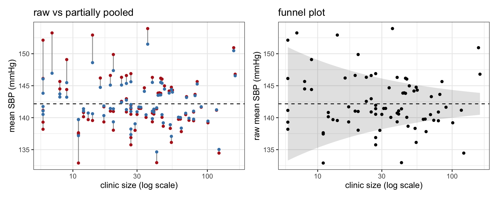
The spread of the raw means is 4.4 mmHg; the spread of the pooled estimates is 3.1 mmHg. The difference is the part of the apparent between-clinic variation that was sampling noise. If your exploratory question is “which clinics stand out”, the pooled estimates are the better description, and the extremes of the raw ranking are mostly small clinics that got lucky.
The funnel plot in the right panel of Figure A.9 is the same idea without a model, and is worth knowing because it is the standard display for institutional comparisons.14 Each group mean is plotted against its precision, and the limits fan out where the groups are small. 26 of the 80 clinics fall outside the 95% limits here, against the 4 or so you would expect if all clinics were identical – which tells you that the funnel’s implicit null (every clinic has the same mean) is false, and that genuine between-clinic variation exists. That is exactly the quantity the multilevel model estimated directly as the between-clinic SD. Reading the two displays together is more informative than either alone.
The third question is answered by adding group-level predictors and watching the between-group SD:
m_eda2 <- brm(sbp ~ 1 + teaching + (1 | clinic), data = dc,
prior = c(prior(normal(140, 20), class = Intercept),
prior(normal(0, 10), class = b),
prior(exponential(0.1), class = sd),
prior(exponential(0.1), class = sigma)),
chains = 2, iter = 2000, cores = 2, seed = 1,
file = "models/eda_clinic_teach", file_refit = "on_change")
c(without_teaching = median(as_draws_df(m_eda)$sd_clinic__Intercept),
with_teaching = median(as_draws_df(m_eda2)$sd_clinic__Intercept)) |> round(2)without_teaching with_teaching
3.62 3.09 Whatever the between-clinic SD does not drop by is the variation that your group-level variables fail to explain – a description of your own ignorance, and a useful one at the exploratory stage.
Two cautions. First, shrinkage assumes the groups are exchangeable: drawn from a common distribution, differing only in ways the model does not know about. A genuinely deviant group – a laboratory with a miscalibrated instrument, a site that recoded a variable – is exactly the thing EDA exists to catch, and partial pooling will pull it towards the mean and hide it. This is why Figure A.9 plots both estimates. Look at the raw values for data-quality screening and at the pooled ones for description. Second, a variance-components model describes the grouping structure; it does not adjust for group-level confounding. Chapter 28 shows that a random intercept leaves cluster-level confounding in place. Using the model descriptively is fine; reading its coefficients as causal effects is not.
The same machinery answers a question that comes up constantly in laboratory work and rarely gets asked properly: where does my measurement noise come from? Fit crossed or nested random effects for plate, day, operator and batch, and the variance components tell you which of them dominates. That is EDA of the measurement process rather than of the biology, and it is usually more actionable.
Latent class analysis (LCA) is a finite mixture model for categorical data. Given a block of items measured on the same individuals – symptoms present or absent, yes/no answers, ordinal grades – it posits that the population is a mixture of \(k\) unobserved classes, and that within a class the items are independent of each other (the local independence assumption). All the association between the items is thereby attributed to the mixing. What it returns is a set of class prevalences and, for each class, the probability of each item – a small table of response profiles that stands in for the full cross-classification.
This makes LCA a data-reduction device of the same kind as PCA, but for categorical variables and yielding groups rather than axes. It is natural EDA: you have twenty binary comorbidity flags, the cross-tabulation has \(2^{20}\) cells, and you want to know whether the flags travel together in a few recognisable patterns.
Take the master cohort and construct six binary “clinical signs” whose probability increases with the (continuous) latent severity:
library(poLCA)
set.seed(7)
cuts <- c(-1.2, -0.6, 0.0, 0.4, 0.9, 1.4)
items <- sapply(cuts, \(k) rbinom(nrow(d_coh), 1, plogis(2.2 * (d_coh$severity - k))))
colnames(items) <- paste0("sign", 1:6)
lca_dat <- as.data.frame(items) + 1 # poLCA wants 1/2, not 0/1
f <- cbind(sign1, sign2, sign3, sign4, sign5, sign6) ~ 1
fits <- lapply(1:4, \(k) poLCA(f, lca_dat, nclass = k, nrep = 5, verbose = FALSE))
tibble(classes = 1:4,
BIC = sapply(fits, \(z) z$bic),
AIC = sapply(fits, \(z) z$aic)) |>
mutate(across(c(BIC, AIC), \(z) round(z, 0))) |>
kbl(booktabs = TRUE) |> kable_styling(full_width = FALSE)| classes | BIC | AIC |
|---|---|---|
| 1 | 350517 | 350464 |
| 2 | 293735 | 293621 |
| 3 | 286615 | 286439 |
| 4 | 286294 | 286056 |
Class enumeration is the main practical decision, and it is made by comparing information criteria across \(k\), supported by the bootstrapped likelihood-ratio test; in simulation studies the BIC and the bootstrap LRT perform best, and the ordinary likelihood-ratio test between \(k\) and \(k+1\) classes does not have its nominal distribution.15 Two practical points: the likelihood is multimodal, so always fit from many random starts (nrep), and with large \(n\) the BIC will happily keep improving as classes are added, so the choice is partly a judgement about whether the extra class is interpretable and large enough to be useful.
Here the BIC improves sharply up to three classes and then flattens. The three-class solution looks convincing (Table A.3):
set.seed(3)
fit3 <- poLCA(f, lca_dat, nclass = 3, nrep = 10, verbose = FALSE)
map_dfr(seq_along(fit3$probs), \(i)
tibble(item = names(fit3$probs)[i],
class = paste0("class ", 1:3),
p = fit3$probs[[i]][, 2])) |>
tidyr::pivot_wider(names_from = class, values_from = p) |>
mutate(across(where(is.numeric), \(z) round(z, 2))) |>
kbl(booktabs = TRUE) |> kable_styling(full_width = FALSE)| item | class 1 | class 2 | class 3 |
|---|---|---|---|
| sign1 | 1.00 | 0.95 | 0.48 |
| sign2 | 0.99 | 0.83 | 0.21 |
| sign3 | 0.96 | 0.57 | 0.06 |
| sign4 | 0.91 | 0.37 | 0.03 |
| sign5 | 0.78 | 0.17 | 0.01 |
| sign6 | 0.56 | 0.06 | 0.00 |
Three clean profiles: a class with nearly every sign, a class with almost none, and an intermediate class. It would be easy to write this up as the discovery of three patient phenotypes.
It would also be wrong. We generated the data from a continuous latent severity with no classes in it at all. What the three classes recover is a coarse discretisation of that continuum (Figure A.10):
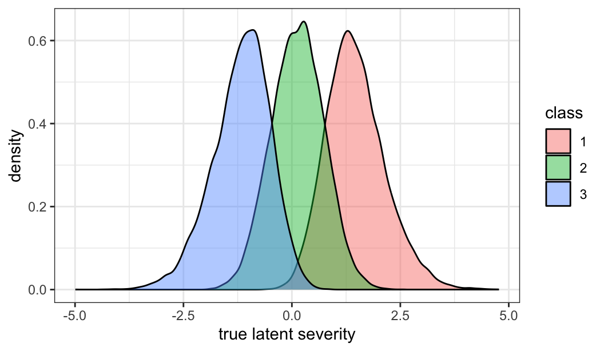
This is the central caveat, and it is not an artefact of our simulation: finite mixture models will extract multiple well-fitting classes from homogeneous, non-normally distributed data, and the within-class parameter estimates from such solutions are largely uninterpretable.16 A good fit to a \(k\)-class model is evidence about the association structure among the items. It is not evidence that the population contains \(k\) kinds of individual. Whether the classes correspond to anything real is a substantive question, to be settled by external validation – do the classes predict something they were not fitted on, do they replicate in an independent sample, do they correspond to a known mechanism – and not by the BIC.
Two further practical warnings:
poLCA returns posterior membership probabilities as well as a modal class assignment. Taking the modal assignment into a downstream regression as though it were a measured variable ignores classification error and biases the downstream association, usually towards the null. The entropy of the classification tells you how bad this is; the corrected three-step procedures exist for when it is bad.17 At the exploratory stage, the safer move is to keep the class probabilities and treat any downstream association as provisional.mclust, tidyLPA), and the same caveat applies with even more force, since a skewed unimodal continuous variable is fitted very well indeed by two normals.Used with these caveats, LCA earns a place in EDA. It compresses a wide block of correlated categorical items into a few profiles you can actually look at, it shows which items carry the association and which are redundant, and it gives you a hypothesis to take to a confirmatory design.
In a study whose object is a causal effect, one exploratory step has no counterpart in ordinary EDA: describing how the exposed and the unexposed differ before any effect is estimated. It answers two distinct questions, and both are descriptive.
Balance: how different are the groups? The conventional display is a table of baseline characteristics by exposure. Its useful column is not a p value – a test of whether the groups differ answers a question nobody asked, and its size is driven by the sample size – but the standardised mean difference (SMD), the difference in means in units of the pooled SD, which does not depend on n.18 A common rule of thumb treats an absolute SMD above 0.1 as a covariate worth attending to.
smd <- function(x, g) {
x1 <- x[g == 1]; x0 <- x[g == 0]
(mean(x1) - mean(x0)) / sqrt((var(x1) + var(x0)) / 2)
}
d_coh |>
summarise(across(c(age, severity, diabetes, sbp),
list(untreated = \(v) mean(v[drug == 0]),
treated = \(v) mean(v[drug == 1]),
SMD = \(v) smd(v, drug)),
.names = "{.col}__{.fn}")) |>
pivot_longer(everything(), names_to = c("covariate", ".value"), names_sep = "__") |>
kbl(booktabs = TRUE, digits = 3) |> kable_styling(full_width = FALSE)| covariate | untreated | treated | SMD |
|---|---|---|---|
| age | 59.416 | 64.316 | 0.471 |
| severity | -0.529 | 0.667 | 1.254 |
| diabetes | 0.156 | 0.313 | 0.375 |
| sbp | 140.952 | 138.065 | -0.266 |
severity is far out of balance, which is the confounding by indication this cohort was built to carry. Note that sbp appears in the table and should not: it is a consequence of treatment, not a baseline covariate, and balancing on it would block part of the effect. A balance table is only as sensible as the decision about which variables belong in it, which is a DAG question rather than a descriptive one.
Overlap: are there comparable people at all? Adjustment can only compare treated and untreated people who could have received either. If some region of the covariate space contains only treated patients, no amount of modelling recovers the contrast there; the model extrapolates instead, silently. This is the positivity condition, and the exploratory check is to summarise the covariates in a single score – the estimated probability of treatment – and compare its distribution between the groups (Figure A.11). A plain glm is adequate here because the score is a descriptive summary of the covariates and not an estimate anyone reports:
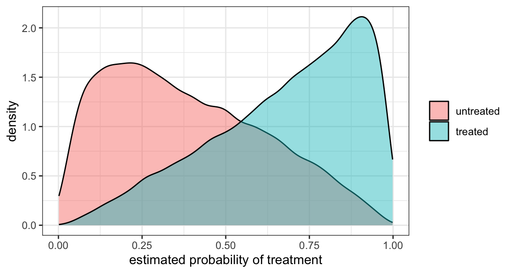
tibble(drug = d_coh$drug, ps = ps) |>
group_by(group = if_else(drug == 1, "treated", "untreated")) |>
summarise(n = n(), min = min(ps), p05 = quantile(ps, .05),
median = median(ps), p95 = quantile(ps, .95), max = max(ps)) |>
kbl(booktabs = TRUE, digits = 3) |> kable_styling(full_width = FALSE)| group | n | min | p05 | median | p95 | max |
|---|---|---|---|---|---|---|
| treated | 27303 | 0.009 | 0.253 | 0.724 | 0.961 | 0.999 |
| untreated | 22697 | 0.001 | 0.064 | 0.351 | 0.807 | 0.987 |
What matters is the region where one group is thin or absent. Scores close to 0 or 1 mean patients whose treatment was near-deterministic given their covariates, and estimates that depend on them rest on extrapolation rather than comparison. This is also where inverse probability weights become extreme, so the same plot forecasts the instability of a weighted analysis before it is run.
Both displays are descriptions of the design, not of the effect, so neither is compromised by the fact that you have looked at the data – which makes them the least problematic exploratory step in a causal analysis, and the one most worth doing first.
Start with the standard distinctions, which hold regardless of context.
Every one of those statements presupposes that the quantity being bracketed was chosen before the data were seen. The coverage of a confidence interval, and the calibration of a Bayesian credible interval, are both properties of a procedure applied to a pre-specified estimand. In EDA, the estimand is chosen because of what the data look like. You plotted twelve variables, one of them showed a trend, and now you are putting an interval on that trend. The interval computed at that point does not have its nominal coverage, and the effect it brackets is on average too large: conditioning on “this one looked interesting” selects for random deviations in the same direction.
This is not a matter of formally testing many hypotheses and forgetting to correct. It happens even when you fit exactly one model, because the model you would have fitted had the data come out differently would have been a different one. The set of analyses your data could have led you to is a garden of forking paths, and the reported interval conditions on only one path through it.19
Bayesian intervals are not exempt. A posterior is calibrated conditionally on the model; if the model was chosen because it fitted these data well, the posterior understates uncertainty in the same way and for the same reason. What Bayesian machinery does offer is a partial remedy for one component of the problem, described in Section A.8.1: when the many comparisons are of the same kind, a multilevel model estimates them jointly and shrinks them, so the extremes are not over-stated in the first place.20 That handles multiplicity. It does not handle model selection.
Read them as widths, not as boundaries. An interval computed during EDA is a statement about the resolution of your data: it tells you how finely this data set can distinguish anything at all. That reading survives exploration, because it is about the design rather than the result:
What does not survive is reading the endpoints as a decision rule. “The interval excludes zero” is not a finding in EDA. Report the estimate and its width, describe how you arrived at the question, and label the result as exploratory.
A better-founded exploratory alternative to an interval is to ask directly what the plot would look like if there were nothing there. Simulate data under the null – by permuting the variable of interest, or by drawing from the fitted null model, or from a posterior predictive distribution – plot the result the same way as the real data, and see whether the real plot is distinguishable.
The formal version of this is the line-up protocol: the real plot is hidden among 19 null plots, and if you can pick it out, the pattern is significant at 5% in a well-defined sense – the plot plays the role of the test statistic, and human perception the role of the test.21 It is one of the few devices that gives visual discovery an inferential footing, and it takes about ten lines of code (Figure A.12).
set.seed(99)
s <- d_coh[sample(nrow(d_coh), 40), c("age", "sbp")]
pos <- sample(20, 1) # which panel is real
lineup <- map_dfr(1:20, \(i)
tibble(panel = i,
age = if (i == pos) s$age else sample(s$age),
sbp = s$sbp))
ggplot(lineup, aes(age, sbp)) +
geom_point(size = 0.7) +
geom_smooth(method = "lm", se = FALSE, linewidth = 0.4, colour = "firebrick") +
facet_wrap(~ panel, nrow = 4) +
theme_bw(base_size = 8) +
theme(axis.text = element_blank(), axis.ticks = element_blank())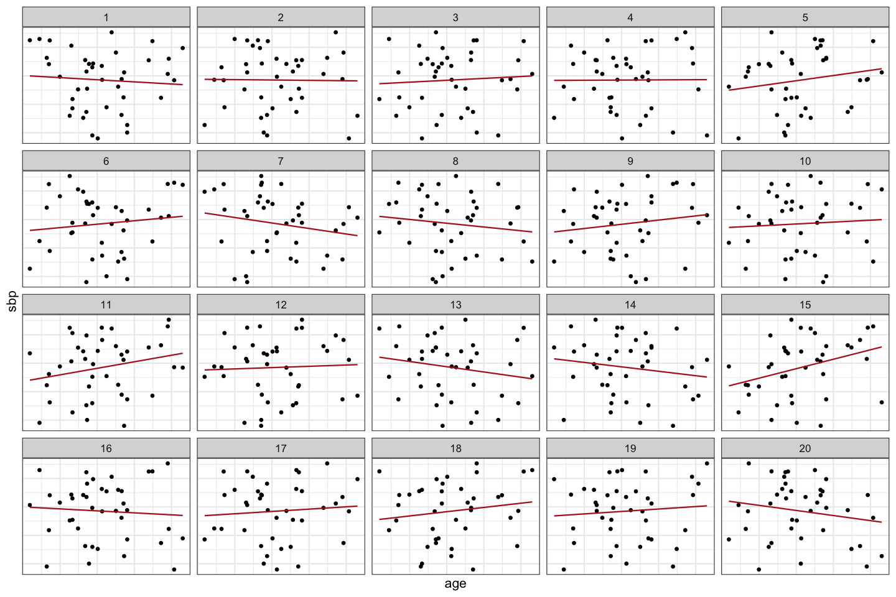
pos # the real panel[1] 5If the real panel does not stand out, the association you thought you saw is within the range that noise produces routinely – and you have learned that without computing a p value or an interval at all.
The cleanest way to have both exploration and valid intervals is to spend some data on each. Split the data set at the outset, explore one part as freely as you like, and fit the analysis suggested by that exploration to the untouched part. The intervals from the second part mean what they say, because by the time they were computed the estimand had been fixed. The cost is precision in the confirmatory half, and the split has to be made before any looking – a split chosen after the fact is not a split.
Where the data are too scarce for that, the alternative is to be explicit: state which analyses were pre-specified and which were suggested by the data, and report the exploratory ones as descriptions. An exploratory finding reported as exploratory is a contribution. The same finding reported as a test is not.
Roughly in the order in which the questions arise:
Sterne JAC, White IR, Carlin JB, Spratt M, Royston P, Kenward MG, Wood AM, Carpenter JR, “Multiple imputation for missing data in epidemiological and clinical research: potential and pitfalls,” BMJ 2009;338:b2393 (DOI).↩︎
Tierney NJ, Cook D, “Expanding Tidy Data Principles to Facilitate Missing Data Exploration, Visualization and Assessment of Imputations,” J Stat Softw 2023;105:1-31 (DOI).↩︎
Anscombe FJ, “Graphs in Statistical Analysis,” Am Stat 1973;27:17-21 (DOI).↩︎
Matejka J, Fitzmaurice G, “Same Stats, Different Graphs: Generating Datasets with Varied Appearance and Identical Statistics through Simulated Annealing,” Proc 2017 CHI Conf Hum Factors Comput Syst 2017:1290-1294 (DOI).↩︎
Robinson WS, “Ecological Correlations and the Behavior of Individuals,” Am Sociol Rev 1950;15:351-357 (DOI).↩︎
Simpson EH, “The Interpretation of Interaction in Contingency Tables,” J R Stat Soc Series B 1951;13:238-241 (DOI).↩︎
Wattenberg M, Viégas F, Johnson I, “How to Use t-SNE Effectively,” Distill 2016;1 (DOI).↩︎
Leek JT, Scharpf RB, Bravo HC, Simcha D, Langmead B, Johnson WE, Geman D, Baggerly K, Irizarry RA, “Tackling the widespread and critical impact of batch effects in high-throughput data,” Nat Rev Genet 2010;11:733-739 (DOI).↩︎
Limpert E, Stahel WA, Abbt M, “Log-normal Distributions across the Sciences: Keys and Clues,” BioScience 2001;51:341-352 (DOI).↩︎
Bland JM, Altman DG, “Transformations, means, and confidence intervals,” BMJ 1996;312:1079 (DOI); Bland JM, Altman DG, “The use of transformation when comparing two means,” BMJ 1996;312:1153 (DOI).↩︎
Kleiber C, Zeileis A, “Visualizing Count Data Regressions Using Rootograms,” Am Stat 2016;70:296-303 (DOI).↩︎
Schemper M, Smith TL, “A note on quantifying follow-up in studies of failure time,” Control Clin Trials 1996;17:343-346 (DOI).↩︎
Spiegelhalter DJ, “Funnel plots for comparing institutional performance,” Stat Med 2005;24:1185-1202 (DOI).↩︎
Nylund KL, Asparouhov T, Muthén BO, “Deciding on the Number of Classes in Latent Class Analysis and Growth Mixture Modeling: A Monte Carlo Simulation Study,” Struct Equ Modeling 2007;14:535-569 (DOI). The R implementation used here is described in Linzer DA, Lewis JB, “poLCA: An R Package for Polytomous Variable Latent Class Analysis,” J Stat Softw 2011;42:1-29 (DOI).↩︎
Bauer DJ, Curran PJ, “Distributional assumptions of growth mixture models: implications for overextraction of latent trajectory classes,” Psychol Methods 2003;8:338-363 (DOI).↩︎
Vermunt JK, “Latent Class Modeling with Covariates: Two Improved Three-Step Approaches,” Polit Anal 2010;18:450-469 (DOI).↩︎
Austin PC, “Balance diagnostics for comparing the distribution of baseline covariates between treatment groups in propensity-score matched samples,” Stat Med 2009;28:3083-3107 (DOI).↩︎
Gelman A, Loken E, “The Statistical Crisis in Science,” Am Sci 2014;102:460-465 (DOI).↩︎
Gelman A, Hill J, Yajima M, “Why We (Usually) Don’t Have to Worry About Multiple Comparisons,” J Res Educ Eff 2012;5:189-211 (DOI).↩︎
Buja A, Cook D, Hofmann H, Lawrence M, Lee EK, Swayne DF, Wickham H, “Statistical inference for exploratory data analysis and model diagnostics,” Philos Trans A Math Phys Eng Sci 2009;367:4361-4383 (DOI).↩︎